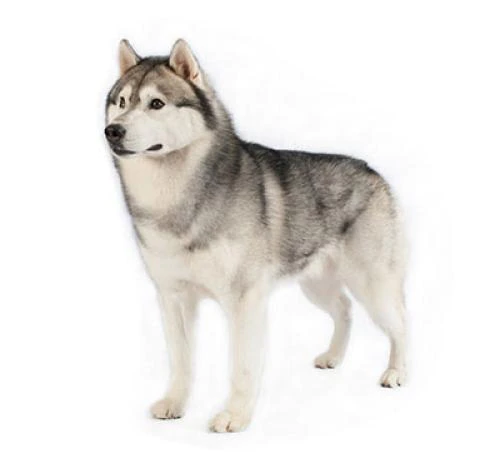

Сибирский хаски
Это собаки среднего размера. Они воплощение баланса силы, скорости и выносливости. У этой породы двойная шерсть средней длины, стоячие уши и пушистый хвост. Возможны любые окрасы и отметины, в том числе белый с замысловатыми рисунками пятен. Рост взрослых самцов — 53-60 см, самок — 51-56 см. Взрослые самцы весят 20-27 кг, самки — 16-23 кг.
Краткая информация для будующих заводчиков
- Собаки, подходящие опытным владельцам
- Требуется дополнительная дрессировка
- Предпочитает интенсивные прогулки
- Предпочитает гулять один-два часа в день
- Средняя собака
- Обильное слюноотделение
- Требует ежедневного ухода
- Негипоаллергенная порода
- Довольно шумная собака
- Сторожевая собака
- Для совместной жизни с другими питомцами может потребоваться дрессировка
- Для совместной жизни с детьми может потребоваться дрессировка
Происхождение
Сибирская хаски помогала чукчам на реке Колыме в Сибири в XIX веке. Вероятно, порода получила признание у чукчей благодаря своему прекрасному характеру. Поскольку сани с собачьей упряжкой были главным средством передвижения, хаски имели первостепенное значение для коренных народов этих мест. Первая сибирская хаски прибыла на Аляску в начале XX века. Ее тогда называли «чукчис». В то время стали популярными гонки на санях. Порода развивала удивительную скорость, что вдохновляло гонщиков в Штатах. Тогда американцы переименовали породу в сибирскую хаски.
Характер
Эта порода известна своим доброжелательным темпераментом и любовью к людям. А это означает, что из такой собаки не получится хороший сторож. Она любит компании и нуждается в них. Ее не следует оставлять в одиночестве на длительное время, иначе собака может демонстрировать разрушительное поведение. Представители этой породы любят общество других воспитанных собак. При этом они еще и активные, умелые охотники. Поэтому следует тщательно обучить собаку контактировать с другими домашними животными. Лают они редко, а вот выть будут с удовольствием!
Поведение
Здоровье
Сибирские хаски — это, как правило, здоровые и крепкие собаки. Как и многие другие породы, эти собаки могут страдать от наследственных глазных заболеваний и иногда от дисплазии тазобедренного сустава (патология, которая может привести к проблемам с мобильностью). Поэтому важное значение имеет оценка состояния глаз и бедер собаки до разведения.
Физические нагрузки
Эта порода нуждается в значительном количестве упражнений. Однако следует обеспечить физическую активность на безопасной, замкнутой территории либо на поводке: у собаки есть сильное желание убежать, если ее отпустить без поводка, и она может не вернуться по команде. Хорошо огороженный сад — это необходимое требование. Поскольку собаки могут перепрыгнуть через объекты из неподвижного положения, важно установить достаточно высокое ограждение. Для взрослой собаки ежедневно необходимо не менее двух часов физических нагрузок, а также возможность свободно бегать без поводка.Питание
Рацион вашей собаки должен обеспечивать оптимальный баланс всех основных групп питательных веществ, не стоит забывать, что у собаки всегда должен быть доступ к свежей и чистой воде. Важно регулярно оценивать состояние тела, чтобы поддерживать вашу собаку в идеальной форме. Кроме того, не забывайте кормить питомца не реже двух раз в день в соответствии с рекомендациями по питанию, прилагаемыми к определенным кормам.
Уход за шерстью
Уход за шерстью довольно прост: прочёсывайте её щёткой и расчёской два-три раза в неделю. Однако в период линьки потребуется ежедневный уход. Эта порода отличается чистоплотностью и почти не имеет характерного собачьего запаха.
Лучшие породы для детей
Считается, что собаки обычно хорошо ладят с детьми. Тем не менее, собаки и дети должны учиться ладить друг с другом, уважать друг друга и чувствовать себя в безопасности будучи вместе. В любом случае, маленьких детей нельзя оставлять наедине с собакой — взрослые обязательно должны контролировать все взаимодействия между ними.